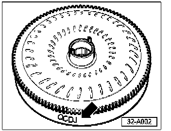
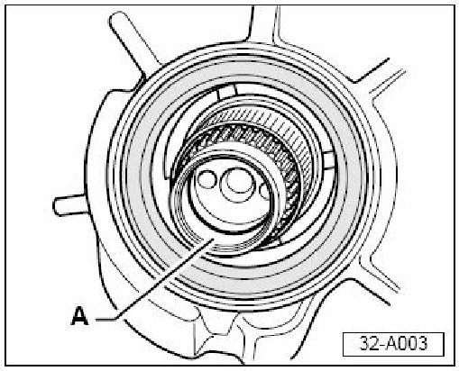
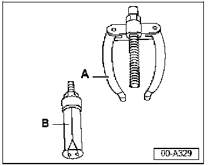
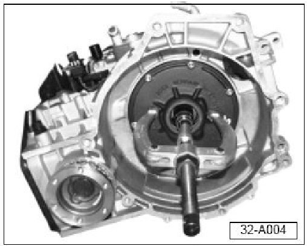
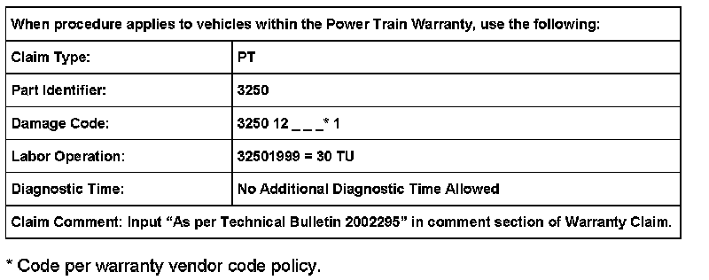
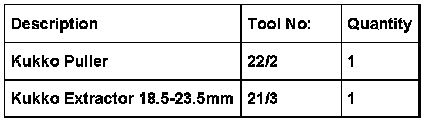

A/T - Torque Converter Installation Precautions
ConditionTorque Converter with Needle Bearing, Installing on Transmission with Bushing on Turbine Shaft
32 07 01 Jan.16, 2007, 2002295, Supersedes Technical Bulletin Group 32 number 00-01 dated November 16, 2000 due to inclusion into ElsaWeb.
Technical Background
Torque converter (with needle bearing) will not install on a transmission with a torque converter bushing installed on the turbine shaft.
Latest generation 4 speed automatic transmissions are equipped with a torque converter which contains an integrated needle bearing between the turbine shaft and the torque converter.

- Replacement torque converters may be equipped with an integrated needle bearing.This torque converter can be identified by the 4th digit (arrow) of coding (will be a D, H or J).
Previous generation 4 speed automatic transmissions were equipped with a bushing between the turbine shaft and the torque converter.
Production Solution
Not Applicable.
Service

- Replacement torque converters with integrated needle bearing will not fit previous generation 4 speed automatic transmissions without first removing bushing -A- from the turbine shaft on the transmission.
Tools, required

- Kukko 22/2 support -A-.
- Kukko extractor 21/3 (18.5-23.5mm) -B-
Turbine shaft bushing, removing
With transmission removed, remove bushing from turbine shaft as follows:
- Remove torque converter.
- Install extractor 21/3 to support 22/2.

- Insert extractor into turbine shaft as shown.
- Adjust size of extractor to size of bushing (do not over-adjust extractor).
- Remove bushing from transmission.
- Replace torque converter oil seal on ATF pump (see ElsaWeb, Repair Manual, Repair Group 32 "Torque converter oil seal, removing and installing".
- Install new torque converter.

Warranty

Required Parts and Tools